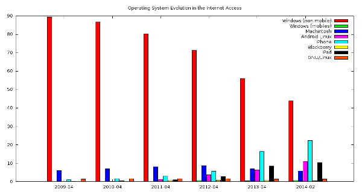

The Evolution in the Internet Access in the Last 5 Years
Índice
- 1. From Personal Computers to Tablets and Smartphones
- 2. The Data
- 3. Looking at Microsoft Windows: From the Sucessfull to the Drecreasing
- 4. Looking at Macintosh: Reborning
- 5. Looking at Google: Borning in the Operating System Market
- 6. Why the Microsoft strategy is not running?
- 7. What happens whith the free software movement?
- 8. Conclusion
- 9. Licencia
Today we are in a moment, where the smartphones and tablets is being more and more used. It is performing a change in the market of operating system and the feeling of values of triumph in this market.
1 From Personal Computers to Tablets and Smartphones
The market of operating system in the internet access is suffering a very strong change from personal computers and laptops to tablets and smartphones in the next graphics, we can see the evolution:
2 The Data

| Operating System | "Windows (non mobile)" | "Windows (mobiles)" | Macintosh | "Android Linux" | iPhone | Blackberry | iPad | GNU/Linux |
| 2009-04 | 89.44 | 0.06 | 6.05 | 0.03 | 0.93 | 0.15 | 0 | 1.46 |
| 2010-04 | 86.63 | 0.04 | 6.89 | 0.17 | 1.52 | 0.38 | 0.04 | 1.58 |
| 2011-04 | 80.39 | 0.07 | 8.17 | 1.12 | 2.89 | 0.51 | 0.90 | 1.56 |
| 2012-04 | 71.38 | 0.66 | 8.75 | 3.67 | 5.67 | 0.80 | 2.76 | 1.60 |
| 2013-04 | 55.9 | 0.47 | 6.90 | 6.32 | 16.37 | 0.51 | 8.43 | 1.31 |
| 2014-02 | 43.87 | 0.68 | 5.85 | 11.03 | 22.34 | 0.39 | 10.34 | 1.35 |
3 Looking at Microsoft Windows: From the Sucessfull to the Drecreasing
Microsoft Windows won the battle in the personal computers thanks a good trade agreements with IBM, the privative licenses, similar features to the competence (for instance, Macintosh), and the freedom to choose the hardware. The image of Microsoft is the successful in the bussiness.
Microsoft did start late in the market of smartphones and tablets with Nokia, this agreement allows has market, but not win in the market.
From 2009 to 2014 has decreased from 89.44% to 43.87% of global market of Internet users in Wikipedia in the non mobile version.
4 Looking at Macintosh: Reborning
Macintosh was an innovative operating system loved by many graphical designers.
The strategy of Macintosh is the same. The company launch a new product with innovative features in a specific hardware. The market is different than the personal computers, you can change pieces in a personal computer with a free market, you obtain more cheaper prices if you has many hardware vendors. In the market of smartphones and tablets you don't change many pieces, you change the full device, in this market has sense the Macintosh strategy.
From 2009 to 2014 has decreased from 6.05% to 5.85% of global market of internet users in the non mobile version. In the mobile version has grow from 0.06% to 0.68%. iPhone has grow from 0.93% to 22.34%. iPad has grow from 0.93% to 10.34%. In summary, iPhone and iPad has grow from 0.99% to 32.68% of Internet users in Wikipedia.
5 Looking at Google: Borning in the Operating System Market
Google born as a university toy of two students of Stanford and today is the most used search engine in the world. Google had been thinking the entry in the operating system market with his own version of GNU/Linux based on cloud. Finally, Google did launch Android with innovative hardware trademarks in competition with Apple.
Android has grown from 2009 to 2014 from 0.03% to 11.03%.
6 Why the Microsoft strategy is not running?
Really, the laptop market is similar than the smartphones and tablets market in the sense that you don't change the pieces, but in the laptop market the apps is new, then there are not qwerty effect and you can choose the apps that you consider cool, or you have installed by default it gives more power to the Microsoft competence.
So, in this field the innovation is so important. Microsoft use to be better in the bussiness. Microsoft could grow if there are more and more comercial agreement or feeling more closed to the innovative cultures: free software communities or universities.
7 What happens whith the free software movement?
The public of the free software movement is the people worried by the ethical problems of the privative software or by technical power shared by this community.
Android mix free and not free software in the same solution, the percentages that an Android user can have of non free software could have is so bigger that in Ubuntu (for instance). Really, the Android users don't know that is free, they only want a good product. But it allows grows important pieces, such as the Linux kernel in number of users.
So, the pure GNU/Linux users is more or less stable, but the market of free software users (in general) is growing, but not with the original values of GNU, is growing with pragmatical values of market.
In the Free Software Foundation Europe there are a campaign to Free your Android (https://fsfe.org/campaigns/android/android.en.html), that is remove the non free software from your Android.
IMHO, the GNU movement in the desktop has the same problem from years: the market. The problem thinking in the market is forget the ethical values. But to preserve and recognise this idealistic values and not only by innovative solutions is necesary to be strong in the economy with values: ethical banks, fair trade, cooperatives, etc. It could be an interesting challenge in the free software movement.
In other markets, such as servers the landscape is better, UNIX is the 67.5% and Windows is 32.5%.
The UNIX servers today is GNU/Linux overall
8 Conclusion
Whith the change of devices, we are seeing a change to operating systems more innovatives, giving the end to the Microsoft monopoly in the Internet access.
9 Licencia
Este documento está bajo una Licencia Creative Commons Atribución 3.0 España